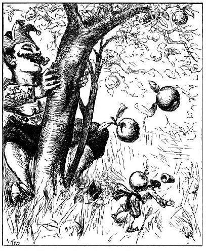
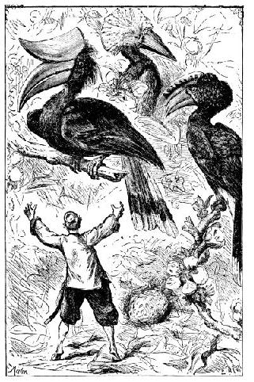
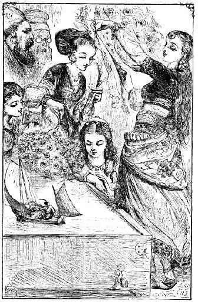
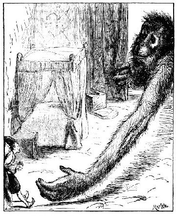

Tác giả gặp nhiều bước gian truân - Một tột phạm bị tử hình - Tác giả trổ tài trong nghề hàng hải.
Nếu không vì thân hình tôi bé nhỏ quá mà bị nhiều vố vừa buồn cười vừa khó chịu thì tôi đã có thể sống vui sướng ở nước này. Tôi sẽ kể lại vài ba chuyện. Cô bé Glumdalclitch thường mang tôi trong hộp đi chơi trong vườn thượng uyển, có khi cô cho tôi ra khỏi hộp, cầm trong tay hay đặt xuống đất. Tôi còn nhớ một hôm gã lùn - lúc ấy chưa bị hoàng hậu đuổi đi - theo chúng tôi vào vườn. Cô bé đặt tôi xuống đất, thằng lùn và tôi đứng cạnh hàng cây táo lùn, tôi thấy cần phải nói một câu châm chọc ám chỉ ví cây táo với nó. Thằng chết tiệt nhăm nhăm tìm dịp trả đũa, thừa lúc tôi đi dưới cây táo, nó rung cây rõ mạnh. Hàng chục quả to như quả bí đỏ rơi lộp bộp chung quanh tôi, một quả rơi trúng lưng lúc tôi đang cúi lom khom, quật tôi ngã chúi mũi xuống đất. Tôi chỉ bị ngã đau, xong không việc gì. Thằng lùn không bị trừng phạt bởi vì chính tôi là kẻ khích bác nó trước.

Một hôm khác, Glumdalclitch đặt tôi chơi trên một bãi cỏ mịn, rồi cùng với ba bảo mẫu đi quanh gần đấy. Bỗng, một trận mưa đá vật tôi ngã úp mặt xuống đất. Cứ thế, những cục đá nện khắp người tôi, những cục đá rắn và nảy như những quả bóng quần vợt. Song, tôi cố nhổm dậy, bò được đến chân hàng rào bách lý hương, nằm bẹp gí ở đây. Tôi bị thương từ đầu đến chân phải mất mười ngày mới khỏi. Chẳng có gì lạ cả vì ở xứ sở này, cái gì cũng giữ cái mức tỷ lệ tương đối trong tất cả vạn vật, một cục mưa đá ở đây to hơn ở châu Âu một nghìn tám trăm lần. Tôi biết thế là do kinh nghiệm, và tôi đã đo cẩn thận để thỏa mãn trí tò mò.
Nhưng có lần tôi đã gặp một tai nạn khác, nguy hiểm hơn, cũng trong khu vườn này. Cô bé Glumdalclitch nghĩ rằng đã đặt tôi ở một nơi yên ổn (tôi thường đòi được yên ổn như vậy để trầm tư suy nghĩ một mình), hộp lại để ở nhà cho đỡ bận tay, bận chân, cô đi chơi với bà bảo mẫu và mấy bà phu nhân sang khu vườn bên cạnh. Trong lúc cô không có đấy, con chó con lông xù của bác làm vườn tình cờ lạc vào trong vườn, chạy đến gần nơi tôi đang đi tha thẩn. Đánh hơi thấy tôi, nó chạy thẳng đến đớp lấy tôi và tha ngay về nhà, đuôi nó ve vẩy và ngoan ngoãn đặt tôi xuống ngay trước mặt chủ. Cũng may con chó rất khôn, nó tha tôi như thế mà tôi không bị xây xát gì, quần áo cũng không rách. Bác làm vườn vốn biết và rất quý tôi, bác hoảng sợ, nhẹ nhàng bế tôi lên, hỏi tôi có việc gì không. Lúc ấy tôi còn chưa hoàn hồn và mệt lử nên không đáp được tiếng nào. Nhưng rồi tôi cũng bình tĩnh trở lại, bác mang tôi đến trả cho cô chủ, cô đang tìm tôi và lo sợ hết hồn hết vía vì gọi mà không thấy tôi thưa. Cô liền trách bác làm vườn vì để con chó tha tôi đi. Nhưng câu chuyện bị dập đi - triều đình không hề biết, bởi vì cô Glumdalclitch sợ bị hoàng hậu mắng và vì uy tín của tôi, nên không muốn một chuyện như thế được mọi người biết.
Sau vụ việc này, cô bé quyết định từ đấy sẽ không dời tôi một bước. Tôi không thích quyết định này nên tôi đã giấu cô mấy việc rủi ro xảy ra những lúc tôi tha thẩn một mình. Một hôm, một con diều hâu lượn trên vườn rồi đâm bổ xuống chỗ tôi, nếu tôi không nhanh tay rút kiếm ra và chạy núp vội bên dưới rặng cây trồng sát bên tường thì chắc chắn nó đã cắp tôi đi mất rồi. Một lần khác, tôi leo lên một cái ổ chuột chũi mới và tôi bị thụt đến cổ đúng vào cái lỗ chuột vừa đào đất lên. Khi về nhà tôi bịa ra một lý do để giải thích là tại sao quần áo tôi bị bẩn. Một lần khác, trong khi tôi đi thơ thẩn, lòng nhớ đến nước Anh xa xôi, tôi vấp phải một vỏ con ốc sên khiến xương ống chân suýt gẫy.

Tôi không biết đây là điều đáng lấy làm vinh hạnh hay là tủi nhục khi tôi nhận xét thấy các con chim nhỏ ở đây không tỏ vẻ sợ tôi chút nào. Lúc tôi tha thẩn một mình, loài chim nhỏ nhảy nhót quanh tôi chỉ cách nửa fathom, thản nhiên kiếm sâu bọ kiếm ăn, như tôi không có đấy. Tôi còn nhớ một con chim họa mi táo tợn mổ miếng bánh tôi cầm trên tay ăn bữa sáng, khi tôi định bắt nó, tức thì nó quay lại, xông vào tôi mà mổ ngón tay tôi, chẳng e dè gì. Thế rồi, chẳng thèm nhìn tôi, nó nhảy đi nơi khác, kiếm sâu bọ như chẳng có gì xảy ra. Một hôm tôi chuẩn bị một cái gậy ngắn rõ cứng, lấy hết sức bình sinh lăng trúng một con chim hồng tước, nó ngã lăn quay xuống đất, hai tay tôi túm lấy cổ chim, lôi một mạch về chỗ cô bé. Nhưng con chim chỉ bị đau nên lặng đi, bây giờ hồi tỉnh, hai cánh đập tứ tung vào đầu, vào mình tôi mấy chục lần khiến tôi suýt phải buông ra. Đúng lúc đó có một người giúp việc chạy lại cứu tôi, anh ta vặn cổ con chim, và theo lệnh của hoàng hậu ban xuống, con chim bị làm thịt cho tôi chén bữa lót dạ hôm sau. Và theo trí nhớ của tôi thì con hồng tước này to hơn con thiên nga ở nước Anh.
Các cô nương trong đoàn tùy tùng hay mời Glumdalclitch sang phòng các cô chơi và đòi mang tôi theo, để các cô nhìn và sờ vào người tôi cho thỏa thích. Các cô thường cởi sạch quần áo tôi ra, ôm ghì vào lòng khiến tôi phát kinh lên được, bởi vì, nói thật là, da các cô tỏa ra một mùi rất khó chịu. Nhận xét này không phải tôi có ý nói xấu các cô gái tuyệt vời ấy - những người mà tôi lất tôn kính, mà ý tôi là do người tôi nhỏ bé hơn so với họ, nên khứu giác của tôi rất nhạy bén vì vậy mới ngửi thấy những mùi như vậy. Nhưng dù sao, tôi vẫn thấy cái mùi tự nhiên ở thân thể họ còn dễ chịu hơn nước hoa họ dùng, cứ nghĩ thấy mùi nước hoa là tôi lăn ra bất tỉnh ngay tức khắc. Tôi còn nhớ đã có lần một người bạn thân của tôi ở Lilliput, vào một ngày oi bức, tôi vận động nhiều, ông ta đã thẳng thắn than phiền vì mùi hôi toát ra từ thân thể tôi - mặc dù về phương diện này, tôi chẳng có gì đặc biệt hơn những người khác. Nên tôi cho rằng cái mũi của ông ta thính hơn mũi tôi, cũng như mũi tôi thính hơn mũi những người ở đây. Về phương diện này, tôi không thể không nói thật rằng hoàng hậu, bà chủ tôi và cô Glumdalclitch, cô vú nuôi tôi, rất thơm tho, chẳng kém gì các bà phu nhân ở Anh...
Một hôm, một vị quý tộc trẻ tuổi, cháu bà bảo mẫu của cô Glumdalclitch, đến ép hai người phải đi dự vụ xử chém một người phạm tội giết bạn. Cô bé, tuy không muốn, vì cô là người dễ xúc động nhưng vẫn bị bạn bè kéo đi. Còn tôi tuy khiếp sợ nhưng cảnh ấy, nhưng vì tò mò, tôi muốn xem một việc chắc chắn là ghê gớm lắm. Tội nhân bị trói vào cái ghế trên cái máy chém, một lưỡi kiếm dài bốn mươi foot chém phứt một cái đứt đầu. Máu phun ra rất nhiều, phun cao tít lên trời, ăn đứt một tia nước phun ở điện

Hoàng hậu hay nói chuyện về những cuộc hành trình trên mặt biển, và mỗi khi thấy tôi buồn bà lại tìm cách giải khuây cho tôi. Một hôm bà hỏi tôi có biết lái thuyền buồm hay chèo thuyền không. Tôi đáp tôi lái buồm và chèo thuyền đều giỏi cả, bởi vì, tuy tôi làm nghề phẫu thuật hay thầy thuốc trên tàu, song nhiều khi do nhu cầu bắt buộc nên tôi phải làm việc như một thủy thủ. Nhưng tôi loay hoay không biết xử trí thế nào ở nước này, nơi mà chiếc ca nô bé nhất cũng bằng tàu chiến to nhất ở nước chúng ta. Còn một chiếc thuyền hợp với cỡ người và sức khỏe của tôi thì đi làm sao được trên nhưng dòng sông ở đây. Hoàng hậu bảo nếu tôi thiết kế được một cái tàu thì bác thợ mộc của bà có thể làm được, và hoàng hậu sẽ tìm cho tôi một nơi mà ở đó tôi có thể bơi thuyền được. Bác thợ mộc là người khéo tay, sau mười ngày làm việc dưới sự chỉ dẫn của tôi, bác hoàn thành một chiếc du thuyền đầy đủ buồm lái, chở được tám người châu Âu ngồi vừa đẹp. Hoàng hậu vui sướng quá ôm con thuyền vào váy chạy đến khoe nhà vua. Vua cho thả thuyền, có tôi ngồi trong, vào một cái chậu đầy nước, nhưng chậu chật quá, tôi không dùng được mái chèo. Hoàng hậu nghĩ ra cách là bảo bác thợ mộc đóng một cái thùng gỗ dài ba trăm foot, rộng năm mươi foot và sâu tám foot, rồi cho quét một lượt hắc ín cho khỏi rò nước. Người ta đặt chậu xuống đất dọc bức tường trong phòng bên cạnh. Cái chậu có một cái vòi tháo nước ra và hai người đầy tớ chỉ cần nửa giờ là đổ nước đầy chậu. Chính trong cái chậu này tôi hay chèo thuyền để vui chơi và để cho hoàng hậu cùng các phu nhân xem. Các bà rất thú vị thấy tôi chèo lái giỏi và khéo. Thỉnh thoảng tôi kéo buồm lên, chỉ việc giữ bánh lái, các bà lấy quạt phe phẩy làm thành những cơn gió nhẹ, khi các bà mệt, đến lượt một gia nhân quạt, còn tôi ra sức trổ tài, khi chạy bên phải, khi sang bên trái, tùy theo ý muốn. Trò bơi thuyền xong, cô Glumdalclitch mang thuyền về phòng, treo lên một cái đinh hong cho khô.
Một hôm trong khi bơi thuyền tôi suýt mất mạng Một gia nhân đặt thuyền vào chậu nước, bà bảo mẫu của cô bé khẽ nhấc tôi lên đặt vào thuyền, song tôi rớt xuống, rất may là trong khi rơi tôi mắc vào cái đanh ghim cài ở áo lót bà bảo mẫu, không thì đã tan xương, vì chỗ ấy cách mặt đất bốn mươi foot. Đầu đanh ghim xuyên vào giữa áo sơ mi và thắt lưng tôi, thành thử tôi cứ treo lơ lửng như thế cho đến khi Glumdalclitch chạy đến cứu được.
Một lần khác, người gia nhân có nhiệm vụ cứ ba ngày thay nước một lần đã vô ý đổ cả một con nhái ở trong xô nước vào chậu mà không biết. Nó náu mình ẩn dưới nước, khi tôi ngồi trên thuyền đâu vào đấy, nhìn thấy chỗ có thể nghỉ ngơi được, nó leo lên thuyền, làm thuyền nghiêng hẳn về một bên, tôi phải cố hết sức đè lên bên kia để thuyền khỏi chìm nghỉm. Nó nhảy hẳn lên thuyền, chiếm nửa khoang, rồi nhảy lên đầu tôi đi lại, làm mặt mũi và quần áo tôi bê bết cái chất nhờn rất kinh tởm. Nó to quá, trông thật khủng khiếp. Song, tôi bảo cô Glumdalclitch mặc tôi xoay xỏa một mình, rồi tôi cầm mái chèo, cứ thế đập lia lịa, cuối cùng con nhái phải nhảy xuống nước.

Tai nạn lớn nhất mà tôi gặp phải ở xứ này là do con khỉ của một bác phụ bếp. Một hôm, Glumdalclitch nhốt tôi trong phòng vì cô bận việc riêng. Trời nóng bức, cửa sổ phòng cô mở toang, cả cửa sổ và cửa lớn của cái hộp to cũng mở. Tôi thường ở cái hộp này, vì nó rộng rãi lại đầy đủ tiện nghi, trong lúc tôi đang ngồi nghiêm trang ở bàn và suy nghĩ thì bỗng có cái gì nhảy tót qua cửa sổ phòng, rồi tiếng chân nhảy nhót khắp nơi. Hoảng quá, tôi ngồi im tại chỗ, liếc nhìn ra ngoài, tôi trông thấy con khỉ đến gần cái hộp, vừa lộn nhào vừa nhảy tâng tâng, nó nhìn cái hộp rất thú vị và chăm chú, nó liếc mắt nhìn qua cửa lớn và hai cửa sổ. Tôi đánh bài chuồn, lùi vào cái xó xa nhất, nhưng con khỉ nhìn khắp xung quanh làm tôi chết khiếp, không còn đủ nhanh trí để chui xuống gầm giường - như thế có khó khăn gì. Nó nhìn, nó nhăn nhở, nó kêu chít chít một lát, rồi cuối cùng trông thấy tôi, nó luồn một tay qua cửa như con mèo vờn con chuột, mặc dù tôi cố hết sức tránh, nhưng nó túm được vạt áo tôi (áo bằng lụa, nghĩa là rất dày và rất dai) kéo tuột ra ngoài. Nó nhấc tôi lên và ôm lấy tôi, như một vú nuôi sắp cho em bé bú - như hệt cái cảnh tôi đã có lần trông thấy ở châu Âu, một con khỉ bế con mèo con. Tôi kháng cự lại, nó ôm chặt thêm. Tôi nghĩ. khôn hơn cả là đành chịu khuất phục. Chắc nó tưởng tôi là một con khỉ con, bởi vì tôi thấy nó lấy tay xoa xoa mặt tôi. Bỗng một tiếng động ở ngoài cửa phòng hình như có ai mở, làm nó dừng tay lại. Nó nhảy phốc qua cửa sổ, rồi leo lên ống máng, ống dẫn nước, nó đi bằng ba chân, còn một chân trước ôm lấy tôi, cứ thế trèo lên nóc nhà hàng xóm. Đúng lúc đó tôi nghe thấy cô bé Glumdalclitch thét lên một tiếng, cô bé như hóa điên hóa dại. Cả khu vực cung điện náo động rồi gia nhân nhốn nháo chạy đi tìm thang. Hàng trăm người chứng kiến cảnh con khỉ ở trên đỉnh nóc nhà, một tay bế tôi như bế đứa bé, một tay ấn vào miệng cho tôi ăn thức ăn nó để dành ở má. Thấy tôi không chịu ăn, nó khe khẽ vỗ về... Thấy vậy đám người tụ tập ở dưới không thể không cười rộ lên. Tôi không thể trách họ, chắc cái cảnh này tức cười thật, trừ có riêng tôi. Mấy người định lấy đá ném cho nó xuống nhưng bị cấm ngay vì người ta sợ ném đá có thể làm vỡ sọ tôi.
Thang được dựng vào tường vì người ta leo lên. Bị bao vây tứ phía, con khỉ thấy đi ba chân không được nhanh, bèn thả tôi xuống một hòn ngói rồi chạy trốn. Tôi ngồi đấy cách mặt đất một trăm năm mươi fathom, tôi chờ đợi từng giây, lo bị cơn gió bốc đi hay vì chóng mặt mà lăn lông lốc từ trên đỉnh cao xuống ống máng. Nhưng một cậu bé, người giúp việc của cô Glumdalclitch, đã kịp lên nhét tôi vào túi quần rồi mang tôi xuống an toàn.
Tôi suýt chết ngạt vì thứ rác rưởi mà con khỉ nhét đầy miệng tôi. Cô bé lấy cái kim kéo ra một đống tướng, thế là tôi nôn thốc nôn tháo, nhẹ hẳn người. Song, sức tôi yếu quá, sườn thì đau nhức nhối vì con vật đáng ghét ấy ôm mạnh quá nên phải nằm liệt giường tới hai tuần lễ. Đức vua, hoàng hậu và tất cả triều đình ngày nào cũng đến hỏi thăm. Hoàng hậu mỗi ngày mấy bận đến thăm nom trong suốt thời gian tôi dưỡng bệnh. Khi sức khỏe bình phục, tôi xin yết kiến đức vua để cảm tạ nhưng ngài có ý chế giễu tôi. Ngài hỏi lúc con khỉ ôm tôi, tôi đã có những suy tư thâm trầm gì, và lúc nó nhét thức ăn vào miệng, tôi thấy mùi vị ra sao, tôi nghĩ gì khi ăn uống như vậy, và không khí mát mẻ trên mái nhà có làm tôi thấy đói không. Ngài còn hỏi nếu như ở nước tôi xảy ra chuyện như vậy thì tôi làm thế nào. Tôi đáp, ở châu Âu không có khỉ, người ta mang khỉ ở nơi khác đến cho lạ mắt, và nó rất nhỏ. Nếu nó táo tợn tấn công tôi thì tôi đánh đuổi được một tá khỉ như bỡn. Còn con quái vật này to bốn con voi, nếu không vì sợ quá mà tôi quên mất thanh kiếm (tôi lấy vẻ kiêu hãnh và vỗ mạnh một cái vào đốc kiếm), lúc nó luồn tay vào hộp, tôi đã cho nó một nhát và nó phải lấy làm sung sướng mà rút tay về nhanh hơn là lúc thò tay vào. Tôi nói mấy câu đó bằng một giọng kiên quyết, như một người không muốn ai nghi ngờ về lòng dũng cảm của mình. Song, những lời tôi nói chỉ làm mọi người phì cười. Tuy trước mặt đức vua phải giữ lễ độ nhưng không ai nhịn được. Điều này làm tôi nghĩ đến những ai cố làm cho những người trong bậc thang xã hội hơn hẳn mình phục mình vì lòng kiêu ngạo, phải đánh giá mình đúng mức. Và ở nước Anh tôi vẫn thường thấy cảnh ấy: một kẻ tay trắng, dòng dõi không, nhân phẩm không, tài năng, tâm tính cũng chẳng có gì đặc sắc, lại muốn tỏ vẻ ta đây là quan trọng và tự đặt mình ngang hàng với các quan đại thần trong triều.
Mỗi ngày tôi cung cấp cho triều đình một câu chuyện vui. Cô Glumdalclitch, mặc dù rất mến tôi, nhưng cô vẫn thường kể với hoàng hậu mọi sự rồ dại của tôi để làm quà. Một hôm cô bị ốm, bà bảo mẫu dắt cô ra ngoại ô chơi - đi bộ khoảng một tiếng đồng hồ, cách thành phố ba mươi dặm - để thay đổi không khí, mọi người xuống xe ngựa bên một ngõ hẻm trên cánh đồng. Cô đặt cái hộp xuống đất, tôi chui ra để chơi. Trong ngõ có một đống phân bò. Tôi muốn nhảy qua để thử sức, tôi lấy đà, nhưng thật vô phúc, tôi nhảy đâu có được như tôi dự tính, nên rơi tõm vào giữa đống phân bò, sâu đến đầu gối, phải khó nhọc lắm mới rút được chân lên. Một người giúp việc lấy mùi soa cố sức lau đôi chân bê bết những phân của tôi. Cô Glumdalclitch nhốt tôi trong hộp cho đến khi về nhà. Hoàng hậu biết ngay câu chuyện vừa xảy ra, anh người làm đưa tin cho mọi người biết, và người ta giễu tôi mấy hôm liền.